1. Underground logo¶
In this exercise we will see how to use the vertical and horizontal alignment to place the elements of the image perfectly centered.
First we open a new document with Inkscape.
Then we copy the following logo in bitmap format into the Inkscape page to serve as a base.

Now we will create a circle with the button-ellipse and circle drawing tools
 .
.To make sure that the circle is perfect and we don't draw an ellipse, we will press the control key | control-key | while dragging the mouse.
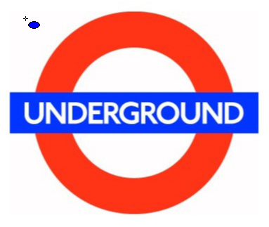 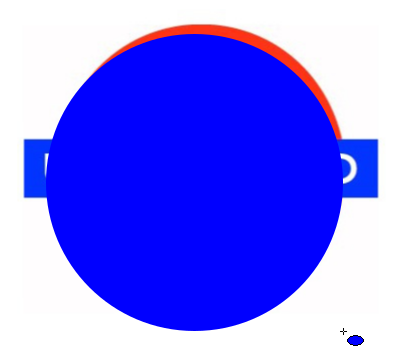Now we are going to make our new circle transparent so that we can see through it and thus adjust its size to the size of the bitmap image below.
In the menu we choose the option
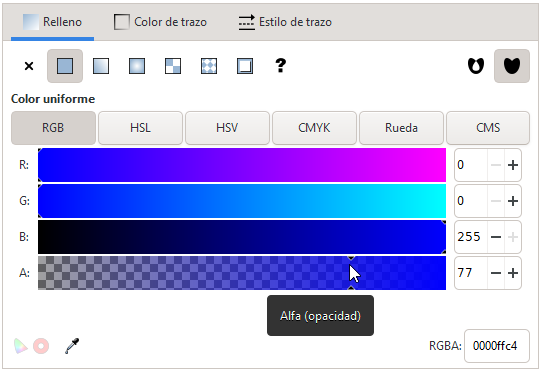Object... Fill and border.... on the right will open the dialog box in which we are going to change the Alpha channel (opacity) to level 77.Our circle will look like this:
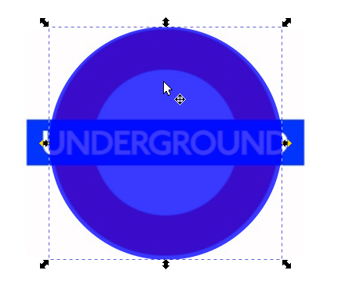The circle still does not have the same size as the base image, so we will change its size by moving the handles (black arrows) with the mouse while pressing the control key
 so that the circle does not become an ellipse.
so that the circle does not become an ellipse.
Finally we click on the lower color bar, the red color to change the fill color of our outer circle.
Once a red circle has been created, we follow the same procedure to create a white circle that we will place on top of the previous one.
Remember to press the control key
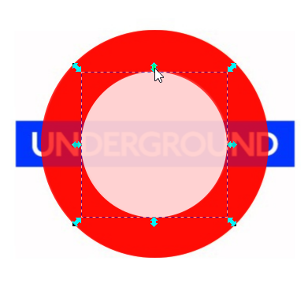 when drawing the circle and when adjusting its size.If at any time we need to move any of the drawings, we will have to press the button to select
 and then we can move the image with the mouse.
and then we can move the image with the mouse.Now we will create a blue rectangle with the tool to create squares and rectangles 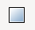.
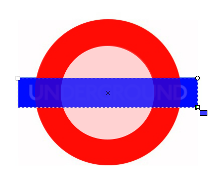We changed the color to blue to match the lower logo.
With the text tool
 click with the mouse on the place where we want the text to appear and write the word UNDERGROUND.
click with the mouse on the place where we want the text to appear and write the word UNDERGROUND.In the upper bar we can select the options of font (Arial Bold) and size (30 points) for our text.
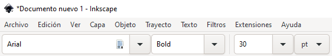With the mouse we move the text so that it is centered in the rectangle.

Finally we change the color of the text to white.
So far we have roughly placed the drawings and text in place, but in vector drawing this is not enough. To make sure that the drawings are correctly placed we are going to select all of them with the mouse and align them with the Inkscape tools.
First we select all the elements.
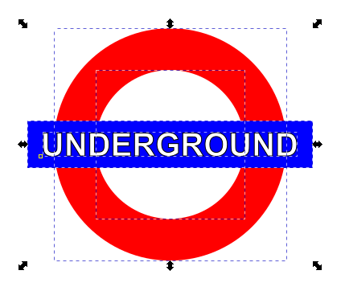Now we choose in the menu
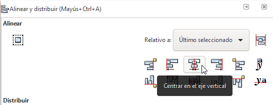Object... Align and distribute...and click on the center on the vertical axis button.Then click on the center on the horizontal axis button.
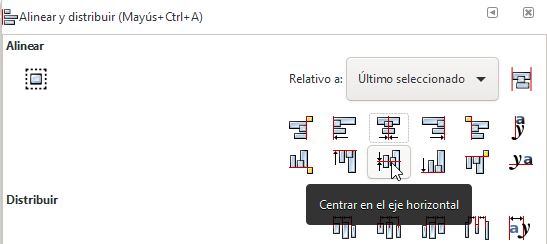Now all the elements of the drawing have been perfectly centered.
If the tool doesn't work correctly, make sure the Relative To: option is set to Last Selected or First Selected.
Finally we must modify one by one the opacity option to remove the transparency that we put at the beginning.
To remove the transparency, press the selection tool
and click one by one on the drawings.With the menu option
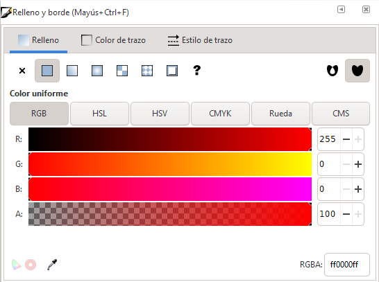Object... Fill and border...we are removing the transparency one by one, changing the value to 100.The end result will be this.

The logo has a different font in the text (the real logo font is paid) and the red color is more saturated, but overall it looks quite similar to the original.